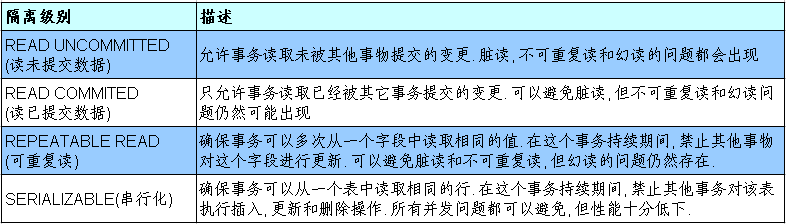

数据库事务
在数据库中,所谓事务是指一组逻辑操作单元,使数据从一种状态变换到另一种状态。
为确保数据库中数据的一致性,数据的操纵应当是离散的成组的逻辑单元:当它全部完成时,数据的一致性可以保持,而当这个单元中的一部分操作失败,整个事务应全部视为错误,所有从起始点以后的操作应全部回退到开始状态。
要么一同完成,要么一起失败。
事务的操作:先定义开始一个事务,然后对数据作修改操作,这时如果提交(COMMIT),这些修改就永久地保存下来,如果回退(ROLLBACK),数据库管理系统将放弃所作的所有修改而回到开始事务时的状态。
事务的ACID(acid)属性
- 原子性（Atomicity）: 原子性是指事务是一个不可分割的工作单位，事务中的操作要么都发生，要么都不发生。
- 一致性（Consistency）: 事务必须使数据库从一个一致性状态变换到另外一个一致性状态。
- 隔离性（Isolation） :事务的隔离性是指一个事务的执行不能被其他事务干扰，即一个事务内部的操作及使用的数据对并发的其他事务是隔离的，并发执行的各个事务之间不能互相干扰。
- 持久性（Durability） :持久性是指一个事务一旦被提交，它对数据库中数据的改变就是永久性的，接下来的其他操作和数据库故障不应该对其有任何影响
JDBC 事物处理
事务：指构成单个逻辑工作单元的操作集合
事务处理：保证所有事务都作为一个工作单元来执行，即使出现了故障，都不能改变这种执行方式。当在一个事务中执行多个操作时，要么所有的事务都被提交(commit)，要么整个事务回滚(rollback)到最初状态
当一个连接对象被创建时，默认情况下是自动提交事务：每次执行一个 SQL 语句时，如果执行成功，就会向数据库自动提交，而不能回滚
为了让多个 SQL 语句作为一个事务执行：
- 调用 Connection 对象的 setAutoCommit(false); 以取消自动提交事务
- 在所有的 SQL 语句都成功执行后，调用 commit(); 方法提交事务
- 在出现异常时，调用 rollback(); 方法回滚事务
- 若此时 Connection 没有被关闭, 则需要恢复其自动提交状态
部分示例代码:
数据库的隔离级别
对于同时运行的多个事务, 当这些事务访问数据库中相同的数据时, 如果没有采取必要的隔离机制, 就会导致各种并发问题:
- 脏读: 对于两个事物 T1, T2, T1 读取了已经被 T2 更新但还没有被提交的字段. 之后, 若 T2 回滚, T1读取的内容就是临时且无效的.
- 不可重复读: 对于两个事物 T1, T2, T1 读取了一个字段, 然后 T2 更新了该字段. 之后, T1再次读取同一个字段, 值就不同了.
- 幻读: 对于两个事物 T1, T2, T1 从一个表中读取了一个字段, 然后 T2 在该表中插入了一些新的行. 之后, 如果 T1 再次读取同一个表, 就会多出几行.
数据库事务的隔离性: 数据库系统必须具有隔离并发运行各个事务的能力, 使它们不会相互影响, 避免各种并发问题.
一个事务与其他事务隔离的程度称为隔离级别. 数据库规定了多种事务隔离级别, 不同隔离级别对应不同的干扰程度
隔离级别越高, 数据一致性就越好, 但并发性越弱
数据库提供的 4 种事务隔离级别:

Oracle 支持的 2 种事务隔离级别：READ COMMITED, SERIALIZABLE. Oracle 默认的事务隔离级别为: READ COMMITED
Mysql 支持 4 中事务隔离级别. Mysql 默认的事务隔离级别为: REPEATABLE READ
在 MySql 中设置隔离级别
每启动一个 mysql 程序, 就会获得一个单独的数据库连接. 每个数据库连接都有一个全局变量 @@tx_isolation, 表示当前的事务隔离级别. MySQL 默认的隔离级别为 Repeatable Read
查看当前的隔离级别: SELECT @@tx_isolation;
设置当前 mySQL 连接的隔离级别:
- set transaction isolation level read committed;
设置数据库系统的全局的隔离级别: - set global transaction isolation level read committed;